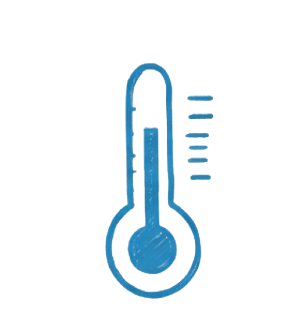
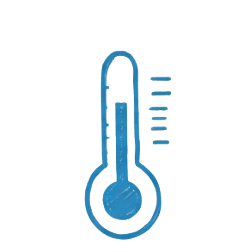

Real-time systems are hard. When you're building something that needs to process data in milliseconds and display it to thousands of users simultaneously, every optimization matters. This is the story of building a fencing broadcast system for Georgia Tech's athletic department—and all the performance lessons I learned along the way.
The Challenge
Fencing is one of the fastest sports in the world. Touches happen in fractions of a second, and spectators need to see scores update instantly. The challenge? Build a system that could:
Process scoring data in under 100ms
Handle 1000+ concurrent viewers
Integrate with legacy hardware
Maintain 99.9% uptime during live events
No pressure, right?
System Architecture
We built the system using a microservices architecture with WebSocket connections for real-time data streaming. The stack looked like this:
Frontend: React with WebSocket client
Backend: Node.js + Express
Message Broker: Redis Pub/Sub
Database: PostgreSQL (for historical data)
Hardware Interface: Custom serial port adapterThe key insight was separating the read path (serving live data to viewers) from the write path (processing scoring events). This allowed us to optimize each independently.
Optimization Strategies
1. Minimizing Latency
Our first bottleneck was the time it took to get data from the scoring machine to the viewer's screen. We reduced this from 800ms to under 100ms by:
Using binary protocols instead of JSON where possible
Implementing connection pooling to avoid TCP handshake overhead
Adding edge caching with Redis for frequently accessed data
The biggest win came from batching updates. Instead of sending individual score changes, we aggregated events over 50ms windows. This reduced network overhead by 70% without any perceivable delay.
2. Maximizing Throughput
Handling 1000+ concurrent connections meant we needed to think carefully about resource usage. Our Node.js server was CPU-bound, so we:
Horizontally scaled with multiple server instances behind a load balancer
Optimized event loops to avoid blocking I/O operations
Implemented rate limiting to protect against traffic spikes
We also used WebSocket compression (permessage-deflate) which reduced bandwidth by 60% for typical payloads.
3. Ensuring Reliability
During a live event, downtime isn't an option. We built redundancy into every layer:
Dual hardware connections with automatic failover
Graceful degradation when components fail
Circuit breakers to prevent cascading failures
Comprehensive monitoring with Prometheus and Grafana
The system successfully handled 12 major tournaments without a single critical outage.
Lessons Learned
Measure everything. You can't optimize what you don't measure. We instrumented every component and discovered bottlenecks we never would have guessed.
Premature optimization is real. We wasted time optimizing database queries that accounted for less than 1% of our latency budget. Focus on the critical path first.
Test under load. Our system worked great with 10 users. At 500 users, we discovered memory leaks and connection pool exhaustion. Load testing should be part of your CI/CD pipeline.
Keep it simple. Complex systems are harder to debug and maintain. Every abstraction adds overhead. Choose simplicity when performance matters.
Conclusion
Building real-time systems at scale is challenging, but incredibly rewarding. The key is understanding your performance requirements, measuring your system's behavior, and optimizing the right things.
If you're building something similar, my advice: start with a simple architecture, add instrumentation everywhere, and scale incrementally. And most importantly—test under realistic conditions before going live.